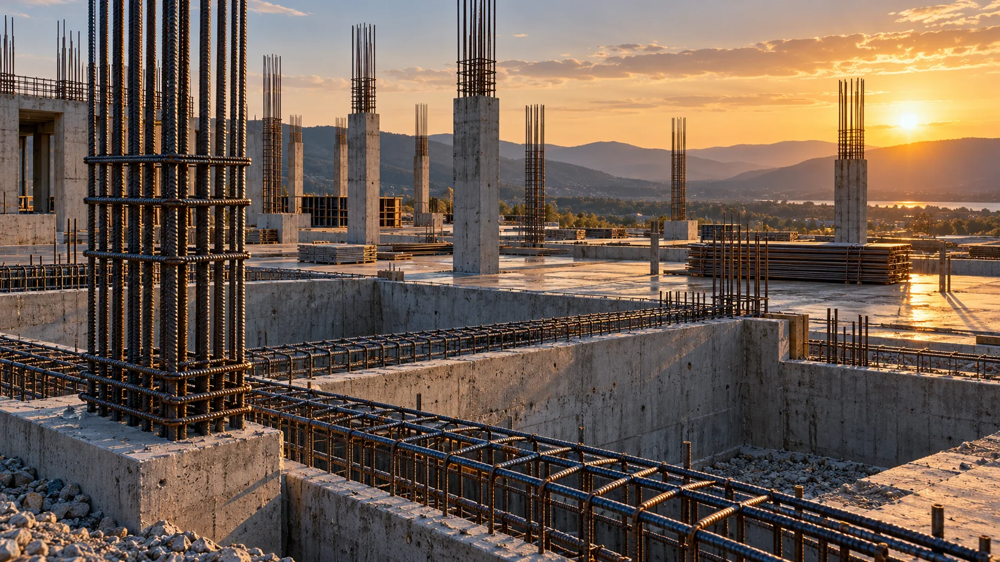

Atendimento personalizado
Informações e orientação para conversar sobre as necessidades da sua obra.
ALFENAS · MINAS GERAIS
Soluções em ferragem armada, barras, treliças, vergalhões, telas e vigas para obras em Alfenas e região.
01 / A EMPRESA
A Daniel Ferragens atua no fornecimento de ferro e aço para a construção civil em Alfenas e região, aproximando cada projeto dos materiais de que precisa.
Com atendimento personalizado, a conversa começa pela sua necessidade: o tipo de material, as medidas e as quantidades previstas para a obra.
02 / NOSSO CATÁLOGO
Encontre a categoria que seu projeto precisa.
Medidas e disponibilidade sob consulta.
Nenhum produto encontrado. Experimente outro termo ou selecione “Todos”.
Imagens ilustrativas geradas por IA. Especificações, aplicações e disponibilidade devem ser confirmadas com a empresa.
03 / APLICAÇÕES
Ferro e aço presentes em diferentes etapas da construção. Converse com a equipe sobre os materiais previstos no seu projeto.
Vamos falar sobre sua obra ↗
04 / UMA CONVERSA QUE CONSTRÓI
Informações e orientação para conversar sobre as necessidades da sua obra.
As principais categorias de ferro e aço reunidas em um catálogo organizado.
Descreva o que precisa e prepare seu pedido diretamente para o WhatsApp.
Comunicação clara para facilitar o contato entre você e a empresa.
05 / EM PERSPECTIVA
Explore os detalhes dos materiais.
Clique nas imagens para ampliar.
Galeria ilustrativa gerada por IA. Não representa estoque, instalações ou obras reais da Daniel Ferragens.
06 / VAMOS CONVERSAR
Conte o que sua obra precisa.
Prepare sua solicitação e envie pelo WhatsApp.
Alfenas — Minas Gerais
Atendimento a Alfenas e região.
Demonstração comercial: a empresa deverá confirmar o canal de WhatsApp antes da publicação oficial.